爱 生活
- 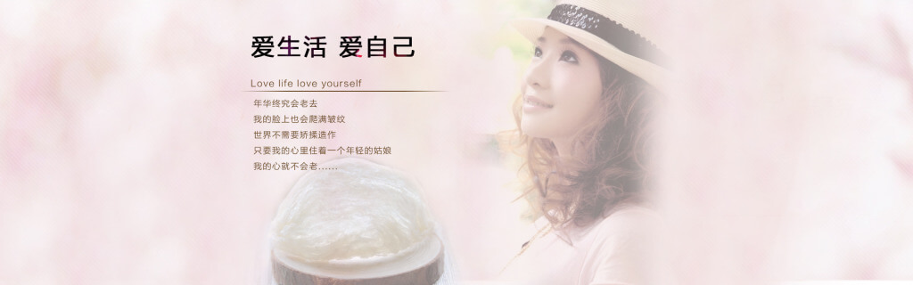
- 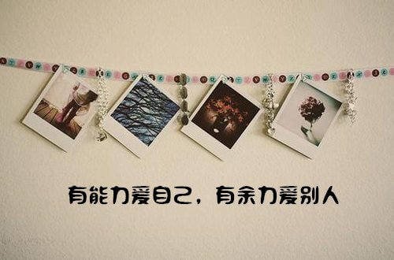
<
>
沉浸书海
-
城南旧事
大时代中的小故事，引领你重重温心底那段柔软，《城南旧事》是著名女作家林海音于1960年出版的以其七岁到十三岁的生活为背景的一部自传体短篇小说集，也可视作她的代表作。 它描写二十世纪二十年代，北京城南一座四合院里，住着英子温暖和乐的一家。它透过主角英子童稚的双眼，向世人展现了大人世界的悲欢离合，有一种说不出来的天真，却道尽人世复杂的情感。 -
花间集
《花间集》，词中《诗经》，得名于集中作品内容多写上层贵妇美人日常生活和装饰容貌，女人素以花比，写女人之媚的词集故称“花间”。这些词作都是文人贵族为歌台舞榭享乐生活需要而写。绮筵公子、绣幌佳人眉眼传情，当筵唱歌，辞藻极尽软媚香艳之能事。《花间集》内容上虽不无缺点，然而在词史上却是一块里程碑，标志着词体已正式登上文坛，要分香于诗国了。 -
在路上
它一经问世即令舆论哗然，毁誉参半，但被公认为1960年代嬉皮士运动和垮掉的一代的经典之作。 -
小王子
《小王子》是一本清澈心灵的书，是一本成年人写给成年人的童话。正如书中所说的，水对心是有益处的。而《小王子》就如水般澄清透彻，使人安宁并且心生暖意。
美食
-
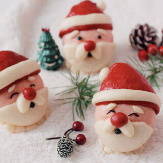
圣诞老人馒头
-
鸡肉洋芋煲
-
水煮肉片
-
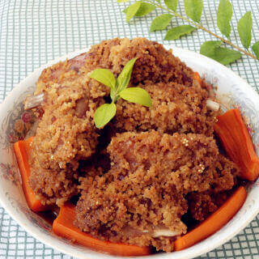
小米蒸排骨
吸猫
-
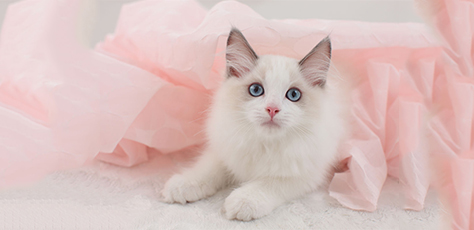
布偶猫
-
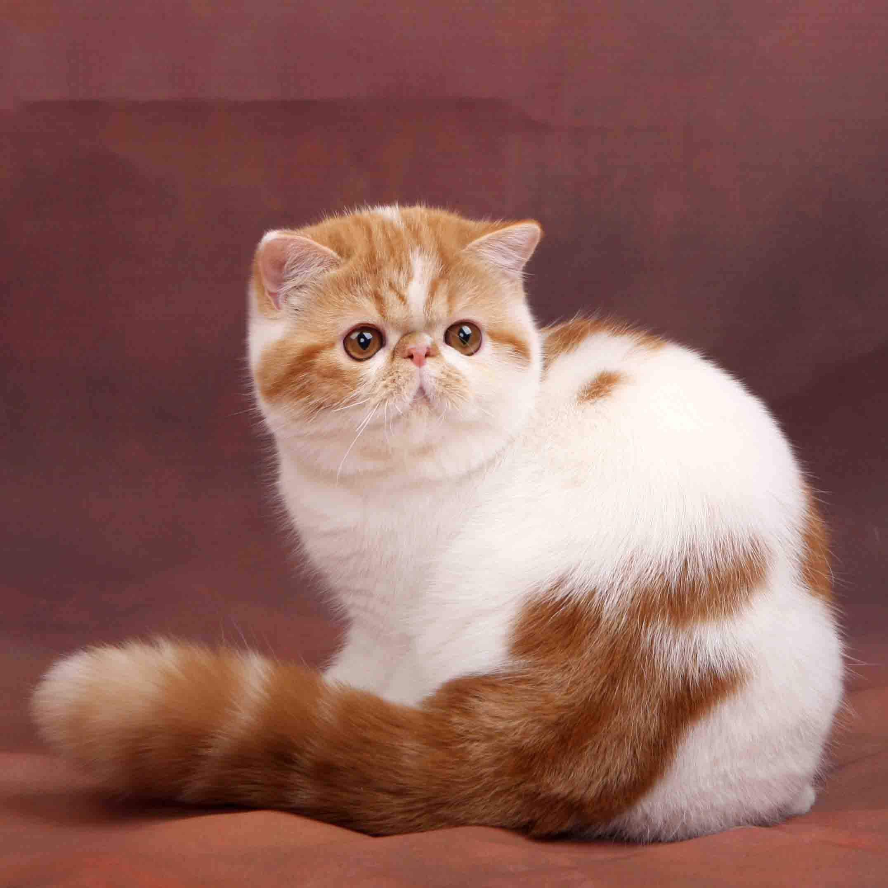
加菲猫
-
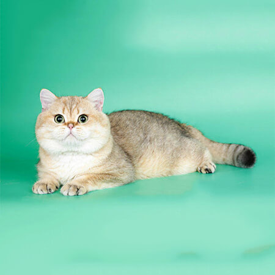
银渐层
-
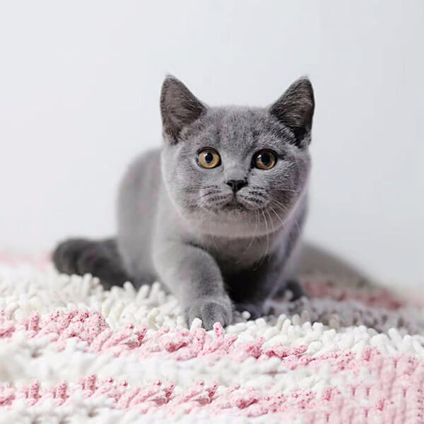
英短蓝猫
-
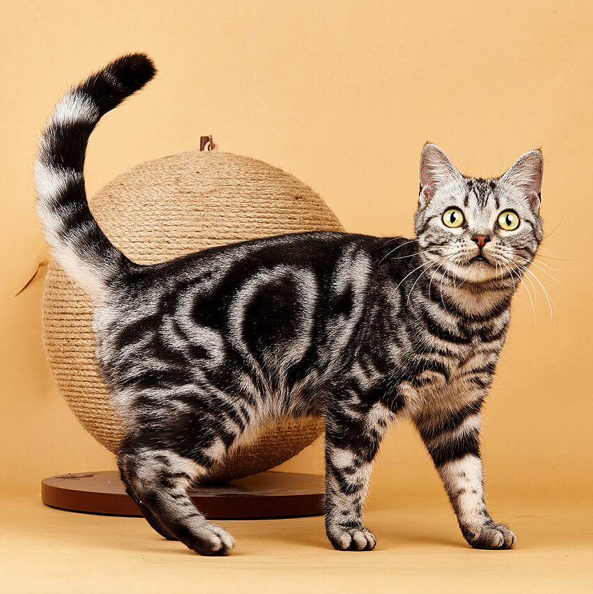
美国短毛猫
-
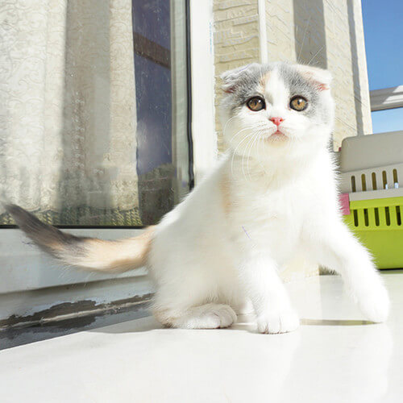
苏格兰折耳貓
-
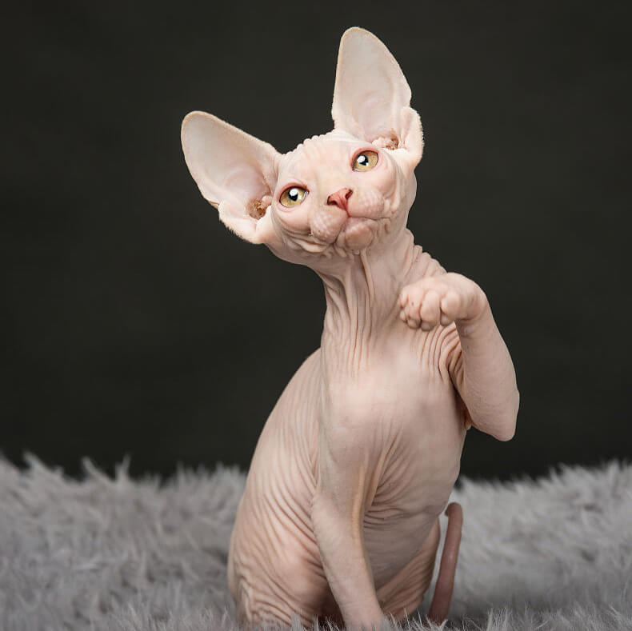
无毛猫
-

曼基康短脚猫
生活态度
- 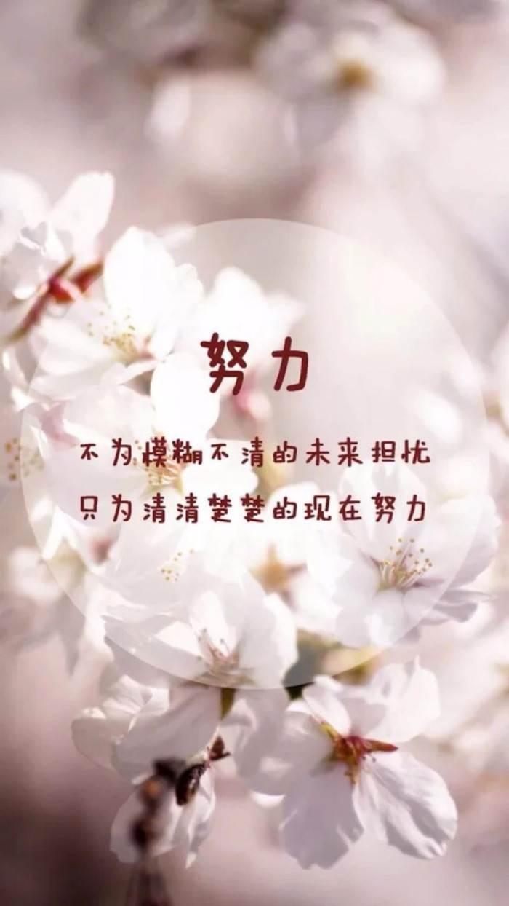
- 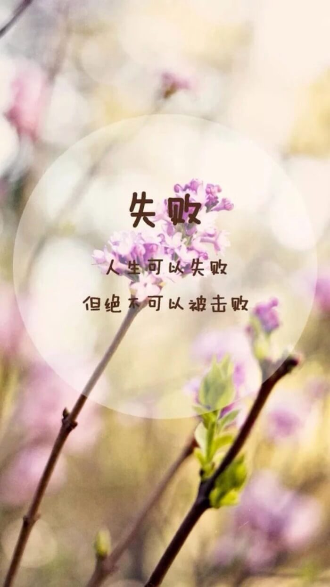
- 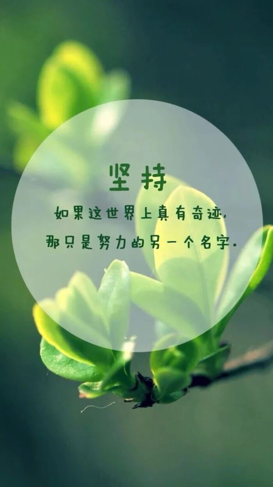
- 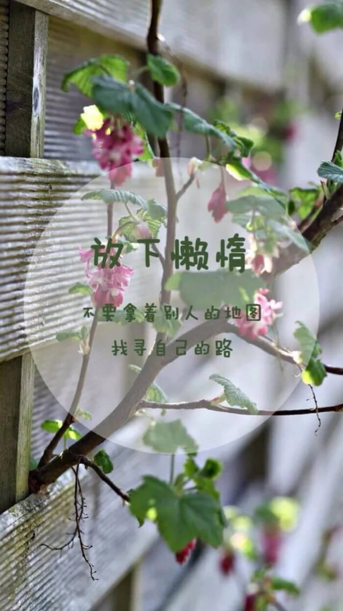
- 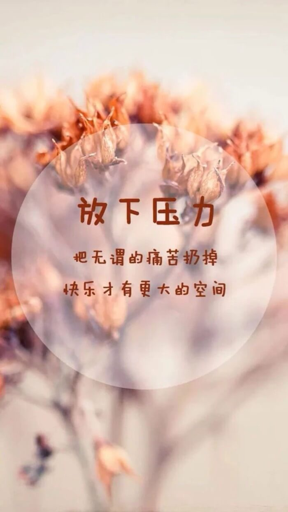
- 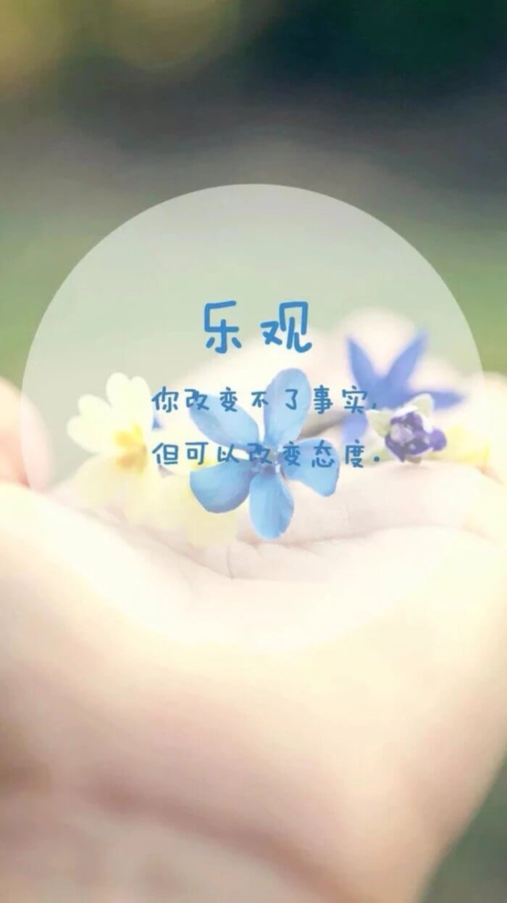
- 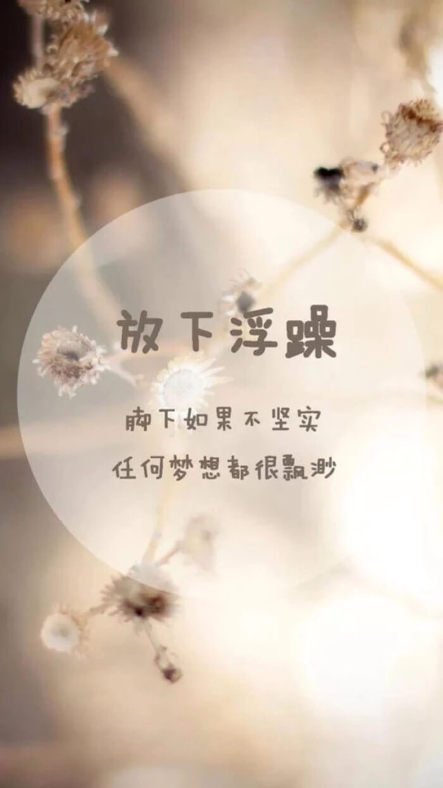
- 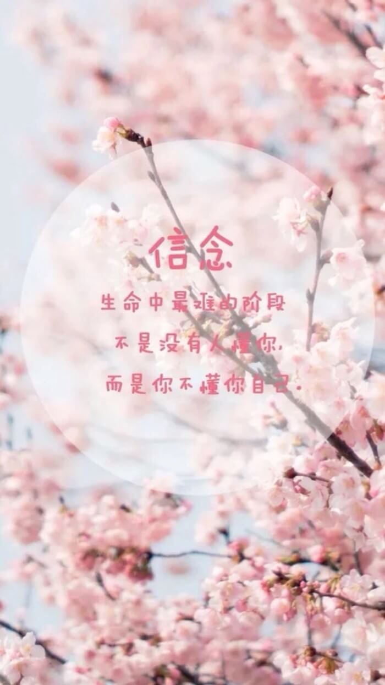
笑着面对生活，会发现这世界其实很美好。